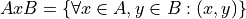
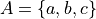
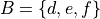
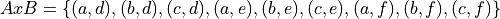

Simulation#
Python allows us to simulate experiments that would otherwise be tedious to perform. In this lab, we will explore a few techniques for simulation.
Instructions#
1. Create a Python .py script named LASTNAME_FIRSTNAME_project_eleven.py in your Linux Files folder on your file system. You can do this by opening an IDLE session, creating a new file and then saving it. Replace LASTNAME and FIRSTNAME with your last and first name, respectively.
3. Create a docstring at the very top of the script file. Keep all written answers in this area of the script.
4. Read the Background section.
5. Read the project_eleven_loading_data section.
6. Load in the data from the .csv file using the technique outlined in the Loading In Data section.
7. Perform all exercises and answer all questions in the Project section. Label your script with comments as indicated in the instructions of each problem.
8. When you are done, zip your script in a zip file named LASTNAME_FIRSTNAME_project_eleven.zip
9. Upload the zip file to the Google Classroom Project Four Assignment.
Background#
Law of Large Numbers#
Definition#
Consider the experiment of flipping a fair coin ten times. Intuitively, if the coin is truly fair, we should get five heads and five tails. However, in practice, this rarely occurs. Since each flip of the coin is independent of the previous coin flip, the fact we get a head on the first flip in no way influences the probability of getting a head on the second flip. Therefore, the chances are actually getting an even number of heads and tails is minimal.
The Law of Large Numbers gives a tool for understanding this result. It says: if we perform the experiment of flipping a fair coin, the more times we flip it the closer it will get to our expectations.
TODO
Python#
Using Control Structures and a few python_builtin_functions, we can simulate experiments involving uncertainty and see the Law of Large Numbers in action. The key idea is using random numbers to represent random draws from a population. If we think of a random number between 0 and 1 as an observation, then we can use logic to construct the experiment.
For example, let the event of getting a random number less than 0.5 correspond to the event of getting heads in a coin flip. Let the event of getting number between 0.5 and 1 correspond to the event of getting a tail. Then, by simulating random numbers between 0 and 1, we can interpret the results as outcomes of flipping a coin.
The following code snippet simulates flipping a fair coin 10 times,
import math
heads = []
tails = []
for i in range(10):
flip = math.random()
if flip >= 0.5:
heads += 1
else:
tails += 1
Cartesian Product#
Definition#
There are other types of Operations that we didn’t cover in class. One of the more important operations we skipped over is the Carteisan Product; we will now take the time to study this operation in particular, as it is helpful for understanding certain Sample Spaces and Events. Several of the problems in this lab will serve as illustrative examples so you may begin to understand what is meant by this operation.
We start with the formal definition. The Cartesian Product of two sets A and B,  , is defined as,
, is defined as,

In plain English,
The Cartesian Product of two sets A and B,
An example will help to show what is meant. Consider the two sets A and B,


A simple way to visualize the Cartesian Product is by forming a table where the top row corresponds to the elements of A and the first column corresponds to elements of B. Then, in each entry, write the ordered pair formed by the intersection of rows and columns,
a |
b |
c |
|
d |
(a,d) |
(b,d) |
(c,d) |
e |
(a,e) |
(b,e) |
(c,e) |
f |
(a,f) |
(b,f) |
(c,f) |
The Cartesian Product is the set of all entries in this table,

Python#
You can generate a Cartesian Product in Python by using Comprehension.
One aspect of Comprehension we didn’t touch on when we first introduced it is the ability to chain together generator expressions to iterate over multiple lists simultaneously. Consider the following example,
pets = [ "dog", "cat", "fish" ]
owners = [ "cleopatra", "augustus", "napolean"]
pet_cross_owners = [ (o, p) for o in owners for p in pets]
print(pets_cross_owners)
Let’s break this example down.
The key point is: we are nesting a list iteration within another list iteration. When we write for p in pets, this tells Python to step through each element of the list pets, namely the elements dog, then cat, then fish. For each element of the pets list, we then tell Python to iterate over the next list with the expression for o in owners. This will iterate over the elements cleopatra, then augustus, then napolean, for each step in the first iteration. Then we glue the results together in an ordered pair (tuple). This whole process is described below in sequence,
- Iterate over
pets - Select element
dog - Iterate over
owners - Select element
cleopatra Form ordered pair: (“dog”, “cleopatra”)
- Select element
- Select element
augustus Form ordered pair: (“dog”, “augustus”)
- Select element
- Select element
napolean Form ordered pair: (“dog”, “napolean”)
- Select element
- Iterate over
- Select element
- Select element
cat - Iterate over
owners - Select element
cleopatra Form orderer pair: (“cat”, “cleopatra”)
- Select element
- Select element
augustus Form ordered pair: (“cat”, “augustus”)
- Select element
- Select element
napolean Form ordered pair: (“cat”, “napolean”)
- Select element
- Iterate over
- Select element
- Select element
fish - Iterate over
owners - Select element
cleopatra Form ordered pair: (“fish”, “cleopatra”)
- Select element
- Select element
augustus Form ordered pair: (“fish”, “augustus”)
- Select element
- Select element
napolean Form ordered pair: (“fish”, “napolean”)
- Select element
- Iterate over
- Select element
- Iterate over
Note that in this example, since A is the set of pets and B is the set of owners, we can interpret as the set of all the possible combinations of pet owners.
Project#
- Using the randint() function, simulate 100 random integer between 0 and 1.
What do you expect the shape of the distribution to be?
Plot the results using a histogram. Save the image and add it to your report.
Comment on the shape of the distribution. Is the result consistent with what you expected? Explain any discrepancies.
- Using the rand() function, simulate 100 random floats between 0 and 1.
What do you expect the shape of the distribution to be?
Using five classes, plot the results using a histogram. Save the image and add it to your report.
What are the class width and boundaries?
Comment on the shape of the distribution. Is the result consistent with what you expected? Explain any discrepancies.
- Using a conditional control structure, simulate 100 flips of a fair coin.
What do you expect the shape of the distribution to be?
Plot the results using a histogram. Save the image and add it to your report.
Comment on the shape of the distribution. Is the result consistent with what you expected? Explain any discrepancies.
- Using a conditional control structure, simulate 100 flips of an unfair coin. Assume the probability of a head is 0.75.
What do you expect the shape of the distribution to be?
Plot the results using a histogram. Save the image and add it to your report.
Comment on the shape of the distribution. Is the result consistent with what you expected? Explain any discrepancies.
- Using a conditional control structure, simulate 100 rolls of a six-sided die. Plot the results using a histogram.
What do you expect the shape of the distribution to be?
Plot the results using a histogram. Save the image and add it to your report.
Comment on the shape of the distribution. Is the result consistent with what you expected? Explain any discrepancies.
- Using the cartesian_product, create a sample space that represents rolling two six-sided die.
Print the results and include them in your report.
Using the Length Function, find the total number of elements in the Cartesian Product. Include the result in your report.
- Consider taking a two question multiple-choice pop quiz. Each question has four possible answers: a, b, c and d. Using the cartesian_product, create a sample space that represents all the different ways you can answer the questions on this pop-quiz.
Print the results and include them in your report.
What is the probability of getting a 100% of this quiz if you randomly guess an answer for each question?
- Using the techniques discussed in this lab, simulate a list of data that could represent the IQs for a population of 30 students.
Plot the results using a histogram. Save the image and add it to your report.
Comment on the shape of the distribution. Is the result consistent with what you expected? Explain any discrepancies.
Is this an accurate simulation of IQs? Why or why not? If not, how could it be improved?
Consider selecting two students from this population with_replacement. What would the sample space for this experiment look like? Include your answer in the result.
Note
IQs generally don’t go below 60 or above 140.